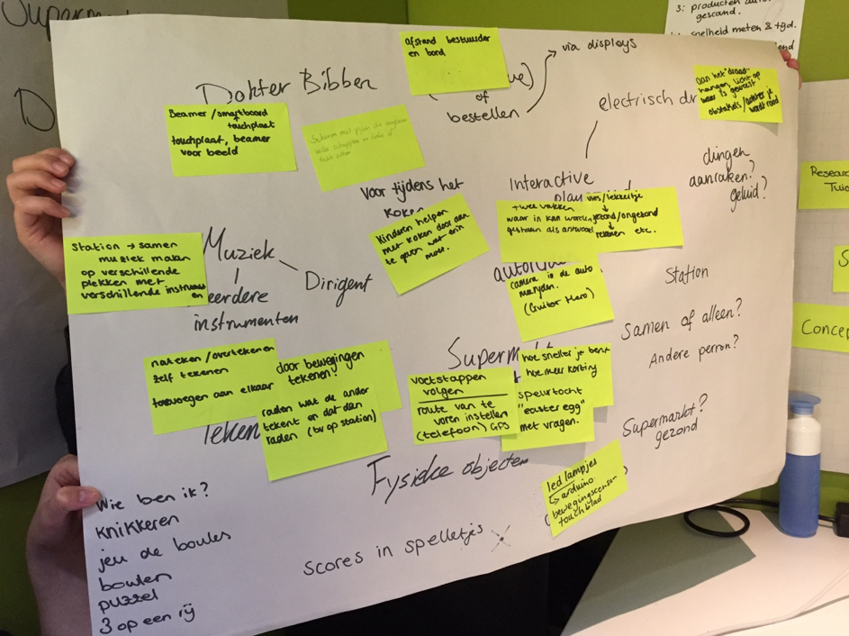
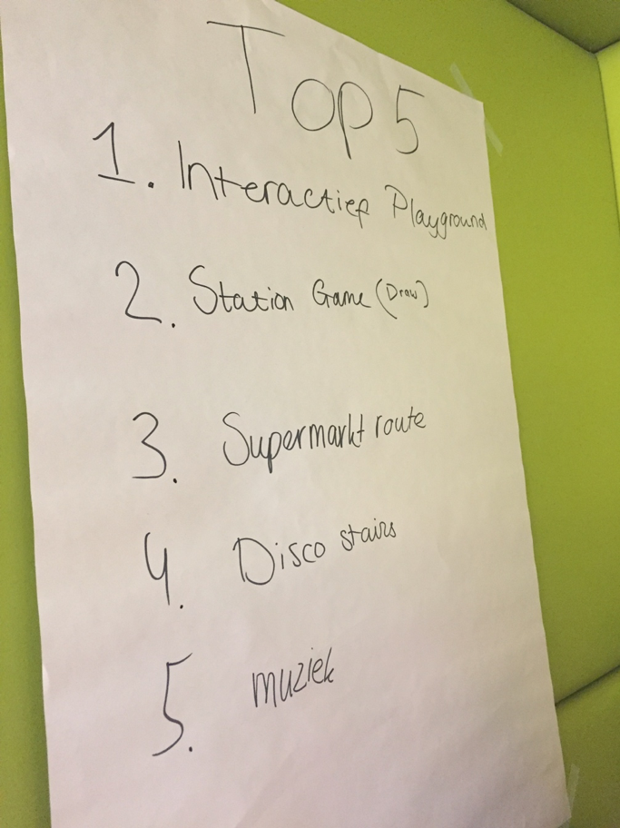
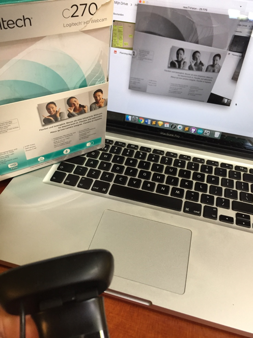
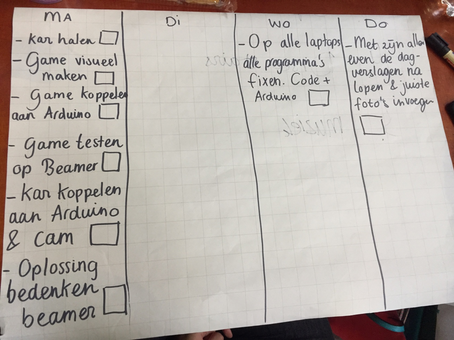
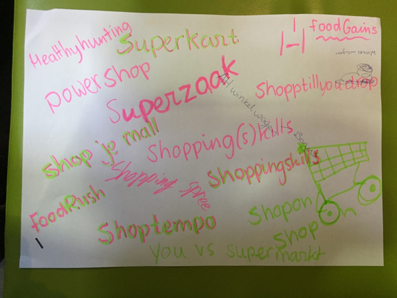

Labweken
Van 4 juni 2018 tot en met 15 juni 2018 heb ik samen met mijn groep in de Dutch Innovation Factory gewerkt aan een Exertion Gaming project. Gedurende deze twee weken heb ik iedere dag een logboek bijgehouden waarin ik beschrijf wat we per dag hebben gedaan en wat mijn bijdrage daaraan was.
Introductie
De opleidingen CMD en CMD-UX werden opgedeeld in groepen. Iedere groep moest twee weken lang samenwerken aan een project. Wat voor project je aan moest werken lag aan welk topic je groep heeft toegewezen gekregen. Er waren een aantal topics namelijk: Exertion Gaming, Virtual & Augmented Reality, Wearables en Artificial Creatures. Ik kreeg het topic Exertion Gaming. Ik werkte gedurende deze twee weken, iedere dag van 9 tot 17 uur, samen met Anna-Fleur Bakker, Marit Leijdens, Qian Hong Ling en Eva Riksen aan ons project. Dit vond allemaal plaats in de Dutch Innovation Factory in Zoetermeer. Op de laatste dag werden alle gemaakte projecten tentoongesteld tijdens de HCI EXPO, deze vond plaats op vrijdag 15 juni. Hieronder ga ik u vertellen wat ik dagelijks heb gedaan tijdens deze weken. Natuurlijk krijgt u ook het eindresultaat te zien, maar ook een leuke video die ons proces weergeeft.
Dag 1: maandag 4 juni
Allereerst na aankomst hebben we een introductie te horen gekregen van Chris. Vervolgens zijn de groepen bekendgemaakt. Na het vinden van de personen uit onze groep zijn we samen gaan zitten. Hierna zijn we vrijwel meteen op het internet gaan surfen naar Exertion Gaming, om zo wat vers te kunnen beginnen.
Na het verdiepen in dit onderwerp hebben we besloten om te gaan brainstormen over het onderwerp en om ideeën te genereren voor ons concept. Hierin leverde een ieder van ons goede input; veel leuke en bruikbare ideeën. Bij het brainstormen hebben we erg in gedachten gehouden dat het eventueel een sociaal-geaccepteerd product zou moeten worden. Iets waar de samenleving iets aan heeft, of het nou superbelangrijk is of niet, maakt niet uit. Zo lang het slechts iemand kan helpen een beter leven te leiden.

Na het verzamelen van potentiele concepten zijn we gaan convergeren door een top 5 te maken en een stem uit te brengen op wat een ieder het leukst vindt. Ik zal de top 5 concepten voorleggen:
1) Interactive Playground, dit hoeft niet voor kinderen alleen te zijn, we hadden veel verschillende ideeën die hierbinnen vallen, voor kinderen bijvoorbeeld een vorm van vies en lekkertje waar een antwoord de goede kant op moet worden geschopt.
2) Station game, een spel voor wachtende mensen op het station, zoals een vorm van Pictionary, waar iemand iets tekent en een random persoon ergens anders op het perron kan raden waar dit is.
3) Supermarket Route, een racespel in de supermarkt, waar het karretje de snelste route aangeeft door LED-lights te laten knipperen. Hoe sneller, hoe beter.
4) Disco Stairs, om de trappen in de HHS Den Haag leuker te maken en gebruik te stimuleren. Wanneer iemand er iemand op een traptrede staat, licht deze op (en komt er geluid uit).
5) Muziek, ook een meer algemeen concept, maar door muziek te combineren met iets, zoals dat men kan dirigeren voor een scherm.

Na het samenstellen van deze top 5 hebben we besloten om een idee hieruit te kiezen om te starten met het doen van testjes e.d. Idee ‘Supermarket route’ heeft de meeste voorkeuren gekregen om te beginnen.
Vervolgens heb ik voorgesteld om alvast een bestand te maken waarin we alle bestanden kunnen plaatsen, zodat iedereen uit mijn groep hier toegang tot heeft. Ik heb een Google Drive groep aangemaakt en de mensen uitgenodigd. Ook is een goede communicatie belangrijk, hiervoor heb ik een WhatsApp groep samengesteld.
Vervolgens heb ik voorgesteld om alvast een bestand te maken waarin we alle bestanden kunnen plaatsen, zodat iedereen uit mijn groep hier toegang tot heeft. Ik heb een Google Drive groep aangemaakt en de mensen uitgenodigd. Ook is een goede communicatie belangrijk, hiervoor heb ik een WhatsApp groep samengesteld.
Bij ons gekozen concept ‘Supermarket Route’ maken we gebruik van een camera, die Fiducials, de Tuio kaarten, kan lezen. Deze Fiducials zijn te vergelijken met QR-codes. Er zijn 212 unieke exemplaren die allemaal gelinkt zijn aan een ID. Deze bestaat uit een getal. Wat wij willen bereiken is dat de lampjes gaan branden bij bepaalde ID’s. We hebben research gedaan naar een programma dat, door middel van een camera/webcam, deze fiducials kan scannen. Dit programma (Tuio) hebben we gekoppeld aan Processing. In processing is het mogelijk om de beweging van deze code te volgen. Eva hield haar telefoon (waarop een Fiducial geopend was) voor de webcam van haar laptop. Door de telefoon te bewegen kon ze het blokje (dat aangaf dat de code gelezen wordt) bewegen. Met nog wat meer onderzoek kregen we deze processing code gelinkt aan Arduino. Uiteindelijk lukte het om een lampje aan te laten gaan wanneer een specifieke Fiducial door de webcam werd gelezen. Dit is wat we voor deze dag (qua technologie) wilden bereiken. De volgende challenge is om twee lampjes te koppelen!
Dag 2: dinsdag 5 juni
We zijn de dag begonnen door samen met elkaar even het SCRUM bord aan te passen. We hebben bedacht wat het doel was voor deze dag. Hierna heb ik eerst mijn reflectie voor dag 1 geschreven, de punten die ik op dag 1 gedaan heb had ik opgeschreven, zodat ik alleen deze punten moest uitschrijven. De doelen voor vandaag waren het maken van schetsen van ons concept (winkelwagen). Daarnaast is er een plattegrond gemaakt van de supermarkt die wij willen namaken waarin ons product zal moeten werken. De schetsen en plattegrond zijn vooral gemaakt door Qian. Ook wilden we zorgen dat de camera zou werken met twee Fudicial markers en deze ook aangesloten op LED lights. Deze LEDS zouden dan blijven branden totdat de code niet meer werd gelezen. Hier hebben Eva en ik aan gewerkt. Ik had wel wat opstartproblemen, omdat mijn Processing vaak een soort foutcode aangaf waarvan we niet konden achterhalen waardoor dit voorkwam. Uiteindelijk hebben we ons doel bereikt en is het gelukt om meerdere markers te kunnen lezen, en te values mee te geven. veel code omgegooid maar hebben het voor elkaar gekregen. En er is ook een (externe) webcam aangesloten, welke werkt om de Fudicials te kunnen scannen. Anna Fleur en Marit zijn naar de Action geweest om een aantal gekleurde LED strips te kopen. Vervolgens zijn deze gesoldeerd zodat ze konden worden aangesloten op een Arduino. Dit is dan ook goed gegaan. Ook heb ik de drive bestanden voor vandaag weer bijgewerkt, zodat onze foto’s/video’s in een geordende drive file zijn opgeslagen.
Dag 3: woensdag 6 juni
Proberen externe camera te linken aan mijn laptop via reactivision, dit werkte niet omdat er bij mij in mijn reactivision map geen camera.xml bestand vond. Deze heb ik vervolgens toegevoegd en de camera id verandert, maar alsnog werkte dit niet. Ik heb de verpakking van de webcam eens bekeken, en schijnt dat er een driver voor is. Echter, deze was niet nodig om de webcam op een windows machine te draaien. Ik heb een random logitech webcam driver geinstalleerd en een camera.xml bestand toegevoegd en de input verandert; de externe webcam werkt nu ook via reacTIVision!

Daarna onderzoek gedaan naar hoe we een webcam/camera kunnen aansluiten op een Arduino zonder aansluiting aan een pc/laptop. Dit is mogelijk door een TTL/Serial link camera te gebruiken. Na wat zoeken op internet kwam ik uit bij ‘Camera module OV7670’. Vervolgens is hebben we gezocht naar een ‘how to use guide’ en deze gevonden.
Ik heb samen met Eva nagevraagd of dit een goede oplossing is om te gebruiken op het winkelwagentje om Fiducials te scannen. Dit was geen goede oplossing, omdat de Arduino simpelweg het vermogen niet heeft om de codes te kunnen lezen en er zou dan geen Processing gebruikt kunnen worden. Dus we moeten een webcam met laptop gebruiken en deze hardware verwerken in onze winkelwagen door eventueel een dubbele bodem.
Vervolgens ben ik wat schetsen gaan maken voor onze winkelwagen. Het was de bedoeling dat het een uitstraling kreeg van ‘Lightning McQueen’, dit is de hoofdpersonage van de filmserie Cars.
Er kwam een nieuw idee in ons op, omdat het huidige concept niet echt een spelelement in zich had. Dus we zijn op het idee gekomen om de winkelwagen als controller te gaan gebruiken in een soort Supermarkt Runner. De winkelwagen wordt dan gelinkt aan de game, rechts en links van de winkelwagen worden Fiducials geplaatst, wanneer deze worden gescand door de winkelwagen naar rechts te verplaatsen zal de winkelwagen op het scherm in de game ook naar rechts gaan.
Hierna hebben we gekeken naar een soort schermopzet door middel van een aantal tafels rondom de winkelwagen te plaatsen, zodat we een idee hadden van de ruimte die we nodig gaan hebben.
Dag 4: donderdag 7 juni
We zijn de dag begonnen met samen te bespreken wat we gedaan hebben, dus het scrum bord bijwerken, en wat we vandaag willen bereiken. Hierna hebben we kort gediscussieerd hoe we de supermarkt gaan maken. In welk programma, 3D of 2D. We hebben besloten dit in Unity te doen in 3D. Omdat ik toch even wilde weten of er geen andere (betere) programma’s beschikbaar waren om onze game in te realiseren ben ik hiernaar op zoek gegaan in Google. Ik heb een aantal top 10’s gevonden, maar bijna altijd stond Unity hier bovenaan. Dus Unity it is! Omdat we niet heel ervaren zijn in Unity en we veel soorten producten moeten namaken, heb ik op in de assetstore van Unity gezocht naar kant-en-klare producten die we zouden kunnen gebruiken. Twee betaalde mogelijkheden gevonden. Vervolgens zijn we met alle groepen naar het arbitrarium gegaan om een hoorcollege te horen. Vincent, eigenaar van bedrijf Next Empire, heeft ons kort toegelicht wat hij en zijn bedrijf doen en maken. Hij heeft voorbeelden laten zien van AR, VR, etc. gemaakt voor echte klanten. De bedoeling was om inspiratie op te doen voor onze eigen HCI projecten. Na het gastcollege ben ik samen met Anna Fleur een tutorial gaan volgen uit YouTube waarin in stappen wordt uitgelegd hoe een soort running game kan worden gemaakt in Unity. Ik ben deze tutorial gaan bekijken en ondertussen de stappen doen in Unity, zodat ik gelijk resultaat kreeg. Dit resultaat is voor nu de algemene layout van onze supermarkt gang in de game.
Dag 5: vrijdag 8 juni
Na de dagintroductie en scrum ben ik verder gegaan met het volgen van de ‘how to make a game in Unity’ tutorial. Echter, lukte een aantal dingen niet goed om werkend te krijgen. Ik heb een student uit een andere groep om raad gevraagd en die heeft mij een andere tutorial aangeboden. Deze ben ik gaan volgen met goed resultaat. Ik heb vrijwel de hele dag hieraan gewerkt, omdat het een uitgebreide tutorial is met veel verschillende aspecten, zowel programmeren en design. Om 13 uur hebben we een gastcollege gevolgd van Peter van der Putten (Media Technology, Universiteit Leiden) over robots. Vervolgens heb ik verder gewerkt aan de game in Unity.
<
Dag 6: maandag 11 juni
Begonnen met een scrum sessie, waarin er met zn allen een overzicht is gemaakt wat er te doen staat deze week. Hierna hebben we een weekplanning gemaakt.

Alle activiteiten die maandag niet zijn geklaard, werden verplaatst naar dinsdag 12 juni.
Na het overzicht gemaakt en besproken te hebben voor de dag ben ik verder gegaan in Unity om de game werkend te krijgen. Vandaag is de game in zijn engine volledig afgemaakt. Wat nog rest is de vormgeving en optimalisatie van het spel.
Aan het einde van de dag wilden we nog even wat anders doen dan achter de laptops en arduino’s zitten. Om toch nog nuttig deze tijd te besteden hebben we een brainstorm gedaan om op namen te komen voor ons spel. Er zijn veel leuke ideeën uitgekomen, maar er is nog geen definitieve naam.

Dag 7: dinsdag 12 juni
Aan het begin van dag zeven hebben we gezamenlijk een scrum sessie gehouden. Hierbij hebben we besloten wat er vandaag moest worden gedaan en is een taakverdeling gemaakt. Vervolgens heb ik gezocht naar een passende HDMI kabel voor de laptop die aangesloten moest worden op de beamer. Ik heb eerst bij de docenten gevraagd of ze er nog een hadden, vervolgens maar op internet gezocht. Uiteindelijk hebben we een HDMI kabel weten te bemachtigen. Vervolgens zijn we gaan kijken of deze lang genoeg was en dus geschikt.
Hierna ben ik op internet gaan zoeken hoe ik Blender bestanden moest importeren in Unity, omdat ik hier zelf nogal problemen mee ondervond en niet precies wist hoe ik dit moest doen. Uiteindelijk heb ik dit zelf geprobeerd op te lossen door Blender bestanden in een kopie van onze game te importeren, zodat in geval van fouten dit geen schade zou hebben voor onze game en dus ons project.
Ook heb ik gezocht naar een asset in de Unity asset store. Ik was op zoek naar een winkelwagentje die we konden gebruiken als ‘player’ in ons spel. We hadden besloten om deze te kopen, want het is erg moeilijk om zoiets in een korte tijd te kunnen maken.
Aan het einde van de dag kwamen mensen van CMDate langs om onze concepten aan te horen. We hadden ons concept aan verschillende mensen verteld, ze waren allemaal positief en benieuwd naar het eindresultaat. We hebben ze natuurlijk ook uitgenodigd voor de expo.
Dag 8: woensdag 13 juni
Korte scrum sessie om de dag te starten en taken te verdelen.
Momenteel is de game werkend, maar is het één baan. Omdat wij gebruik maken van een winkelwagen die als controller dient, moeten we het besturen zo optimaal mogelijk maken. Dit kan worden gedaan door de game in drie banen te verdelen waarbij je na het scannen van de Fudicial (Tuio code) een baan opschuift in de gescande richting.
Even naast Eva gaan zitten om te assisteren bij proberen van Procesing, Arduino en Reactivision te linken aan Unity (game).
Hierna de hele middag aan de game in Unity gewerkt, drie banen opgedeeld en door middel van C# gezorgd dat de player van baan kan wisselen door de pijltjestoetsen te gebruiken.
Dag 9: donderdag 14 juni
Korte bespreking wat we nog moeten doen en wie wat vandaag gaat doen.
Het verwisselen van baan met gebruik van de Tuio Fiducials werkt, dit hebben we vanmorgen getest.
Ik ga verder in Unity om de game te kunnen herstarten te programmeren.
Winkelwagen in de game (als player object) gemaakt.
Puntensysteem gemaakt die werkt door het fruit wat op de baan verschijnt te pakken.
Dag 10: vrijdag 15 juni EXPO dag
Een video zegt meer dan een miloen woorden, geniet ervan!